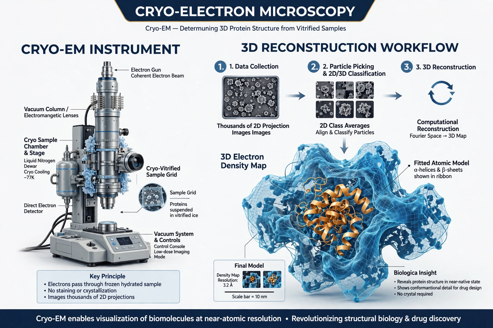

Cryo-electron microscopy (cryo-EM) is an electron microscopy technique applied on samples cooled to cryogenic temperatures and embedded in vitreous ice. It allows specimens to be observed in their native state without staining or fixation.

Hundreds of thousands of images of individual particles in random orientations are aligned, classified and averaged computationally to reconstruct a 3D density map, often at near-atomic resolution — the 'resolution revolution' driven by direct electron detectors in the 2010s.
Richard Henderson determined the first structure (bacteriorhodopsin, 1975); Joachim Frank developed image processing; Jacques Dubochet developed vitrification. They shared the 2017 Nobel Prize in Chemistry.
Ribosomes, viruses, membrane proteins and amyloid fibrils; structures are deposited in EMDB and the Protein Data Bank. Cryo-electron tomography extends the method to cells.